Принцип первый: он не «фэшн-дизайнер»
Есть дизайнеры, которые «делают дропы», и есть Сэмюэль Росс. Британец, выросший в Брикстоне в семье ямайских эмигрантов, бывший первый ассистент Вирджила Абло, основатель A-COLD-WALL* и индустриальной студии SR_A, за десять лет построил парадоксальную карьеру: он коллаборирует практически со всеми — Nike, Converse, Oakley, Timberland, Dr. Martens, Hublot, Apple/Beats, Diesel, Zara, Kohler, Acqua di Parma, вискокурней Balvenie, — но при этом почти не оставляет на продуктах собственного «авторского почерка» в привычном смысле. Его метод — не накладывать эстетику поверх, а переинтерпретировать саму логику вещи.
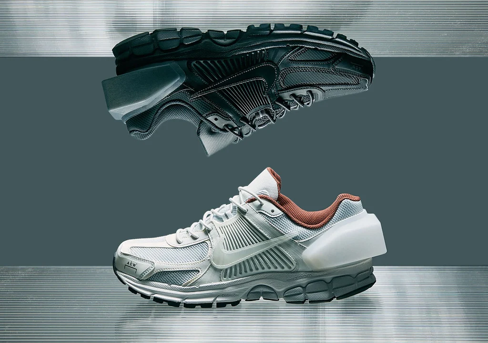
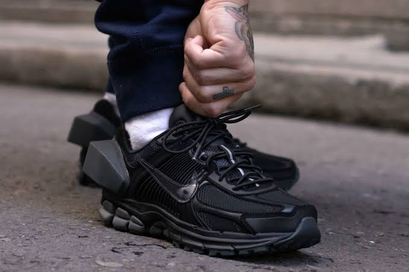
Принцип второй: материал важнее логотипа
Ключ к пониманию всех коллабораций Росса — его отказ от профессиональной идентификации. «Меня никогда не интересовала иерархия. Искусство, дизайн, мода — я люблю всё это. Я так и не смог определиться. Все эти медиумы ощущаются насущными, и в каждом есть послания, которые нужно донести соответствующим образом», — говорит он. Это не риторика. Росс описывает себя и своих ближайших коллег как «дизайнеров и художников до любой дисциплины», вспоминая, что Абло в одном из первых интервью на посту Louis Vuitton заявил: «Я не фэшн-дизайнер». По Россу, подход Абло был «способом мышления и решения проблем, поэтому он мог применить его к стулу, зданию, магазину, кроссовке или автомобилю». Росс унаследовал именно это: коллаборация для него — не сделка лицензирования логотипа, а перенос способа мышления в новую для него категорию.
«Меня интересует, как одежда стареет, и я хочу взять пользователя с собой в это путешествие. Это куда более человечно и динамично»
Сэмюэль Росс
Дизайнер, основатель A-COLD-WALL* и SR_A
Принцип третий: функция ведёт продукт
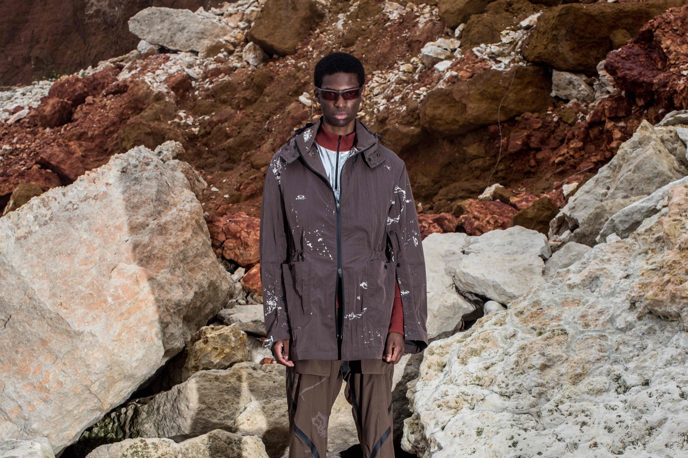
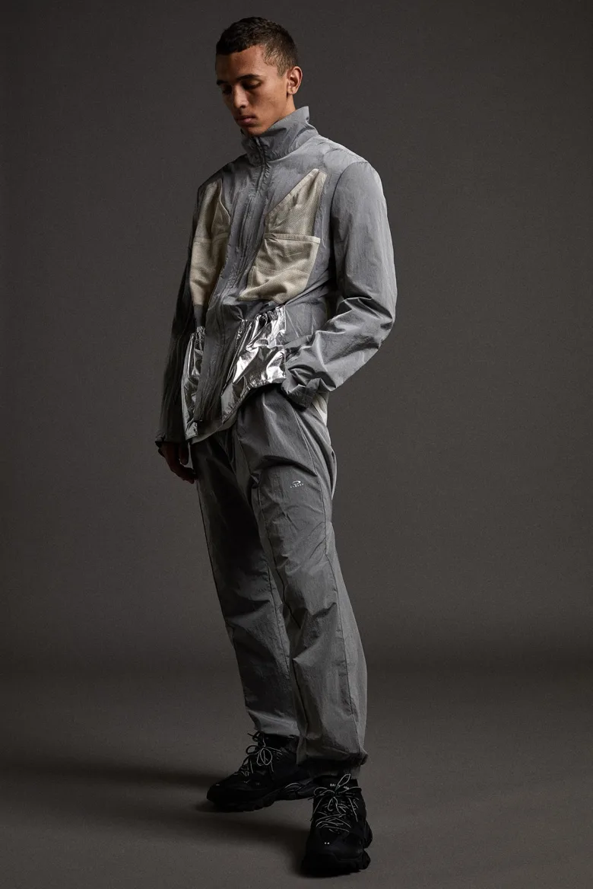
Эстетика Росса часто описывается словами «брутализм», «деконструкция», «социальная архитектура для тела» — он сам определяет место A-COLD-WALL* «между брутализмом и постмодернизмом», ссылаясь на немецкий социальный дизайн середины века. Но на практике это не набор визуальных клише, а метод работы с материей: ткань, кожа, металл, керамика должны меняться со временем и использованием. Самый известный пример — капсула Nike x A-COLD-WALL* 2018 года, где Росс буквально ускорил старение кроссовок Zoom Vomero +5, сняв защитное полиуретановое покрытие.
Параллельно он использовал технический японский нейлон, который смягчается от тепла тела: изначально грубая парка с ноской становится личной. Важна и формулировка его задачи при работе с архивной моделью: «взять нечто очень красивое и не обязательно переосмыслить, а переоценить продукт», выделив и возвысив отдельные компоненты — каркас, технологию, швы. Отсюда и его знаменитая сдержанность: кроссовки Converse Chuck '70 в серо-сланцевых тонах с едва заметным рефлективным патчем или «тихие» переиздания Nike TN98 — принципиальная противоположность громким переделкам в духе «The Ten».
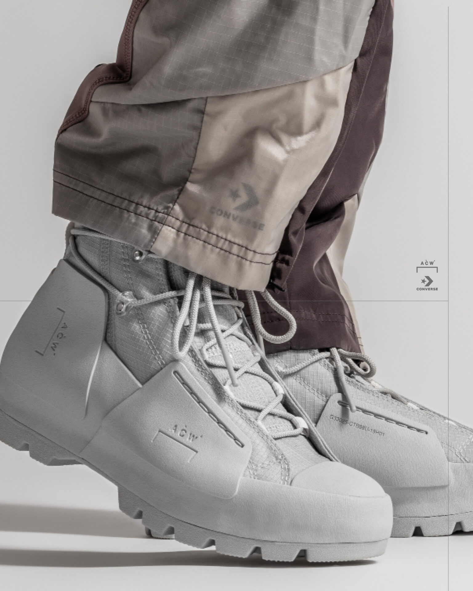
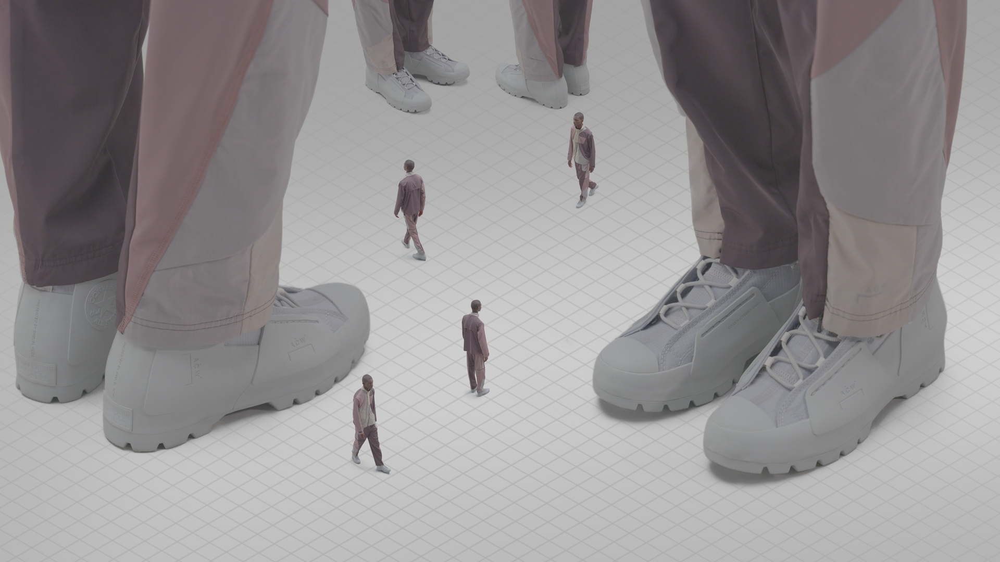
«Нарциссизм во мне ушёл. Дело не во мне — дело в разговорах и коллаборации»
Сэмюэль Росс
Дизайнер
Принцип четвёртый: коллаборация как долгий диалог, а не дроп
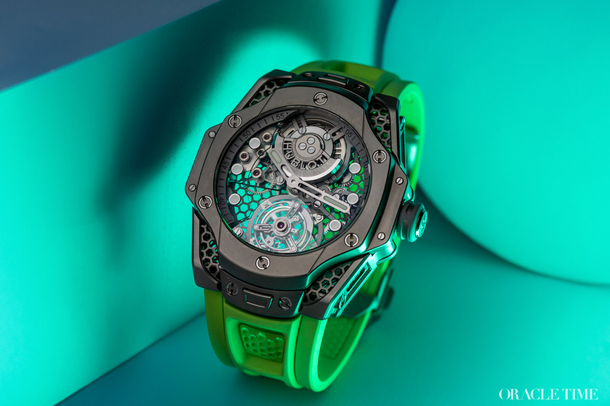
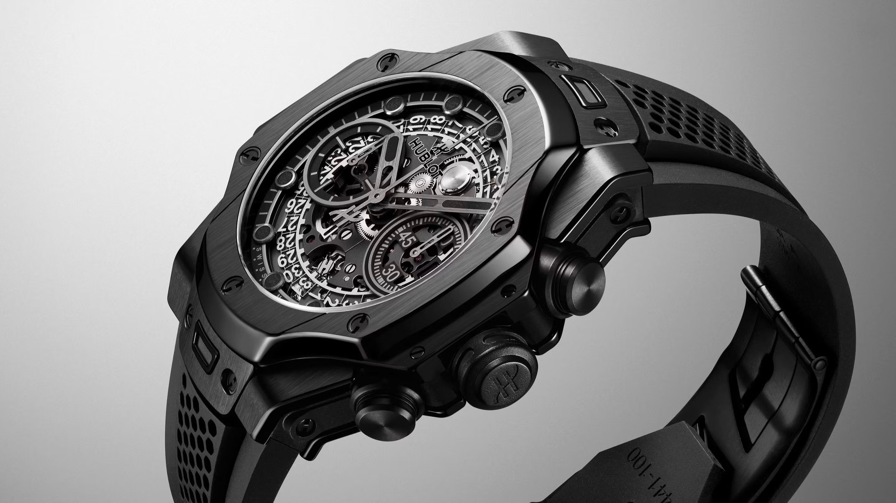
С Oakley Росс выстроил, пожалуй, самую показательную модель сотрудничества — сезонную, эволюционирующую, где одежда проектируется не «на красоту», а через сценарий использования. «Совместная идея современного героя outdoors — это слияние выразительности с функцией», — формулировал он концепцию второго сезона. Партнёрство начиналось как встреча «параллельных вселенных» и стало для Росса школой: он работал с производственными командами, где cutters и швейные цеха прошли путь от Alexander McQueen до Gucci, и откровенно говорил, что «учится делать одежду лучше».
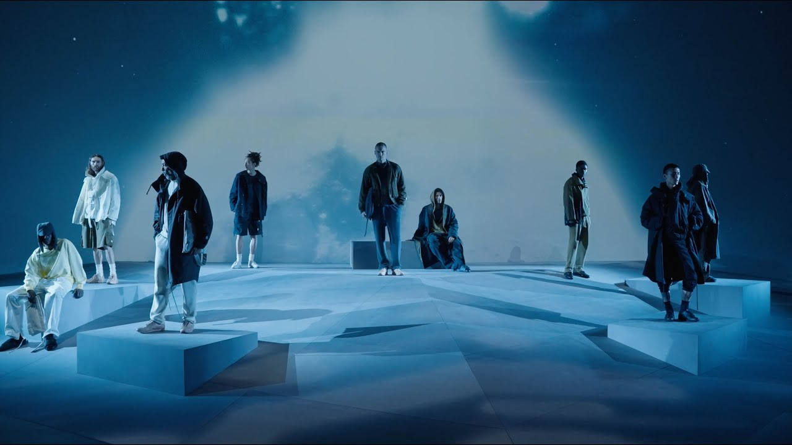
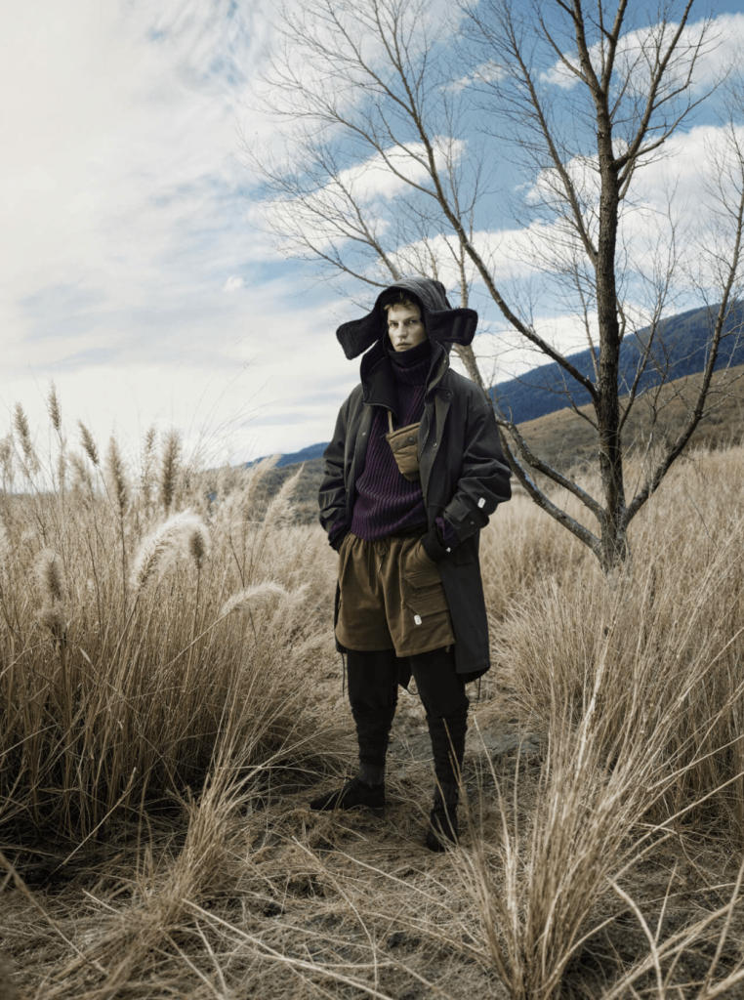
Показателен его подход к съёмкам: лукбуки для Oakley не постановочны — команда действительно уходит в Доломиты на 72 часа хайков, нося прототипы в реальных условиях. «Дело не только в моде — важно, как эти вещи работают, когда их реально используешь». Это и есть его эстетика в чистом виде: индустриальный, почти инженерный прагматизм, через который пропускаются эмоция и нарратив.
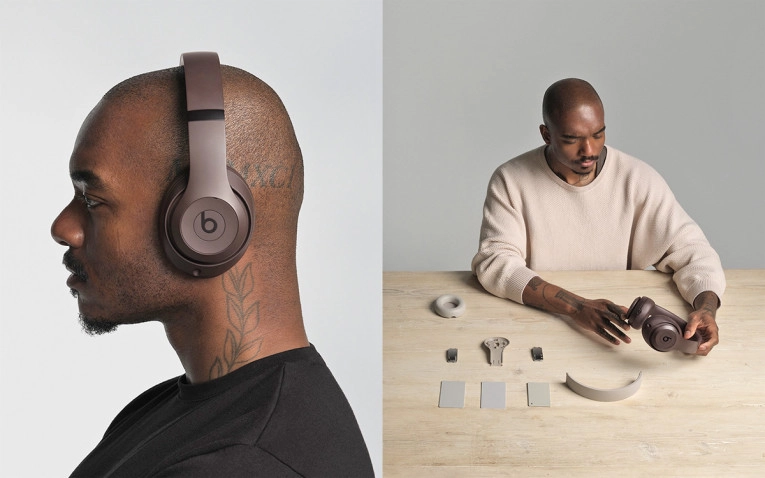
В отличие от большинства «one-off» партнёрств индустрии, Росс строит многосезонные отношения. С Nike он работает с 2017-го (AF1, Vomero, TN98), с Oakley вышел на четвёртый сезон, с Hublot — на четвёртый хронометр. Про часы он говорит прямо: «было много схожего — молодой дизайнер и молодой мезон, оба обозначающие, что будет означать будущее роскоши для современной культуры». Его фирменный сотчатый «медовый» узор на корпусах и ремешках — интеллектуальная собственность, которая переживает смену моделей. То же с Apple/Beats, где для Росса создали должность Principal Design Consultant, и с Zara, где партнёрство SR_A Engineered by Zara запроектировано на два года. Формула «garment system» — долговечные функциональные «униформы для современной жизни» по демократичной цене — переносит его эстетику в категорию массового рынка.
В каких медиумах работает эта эстетика
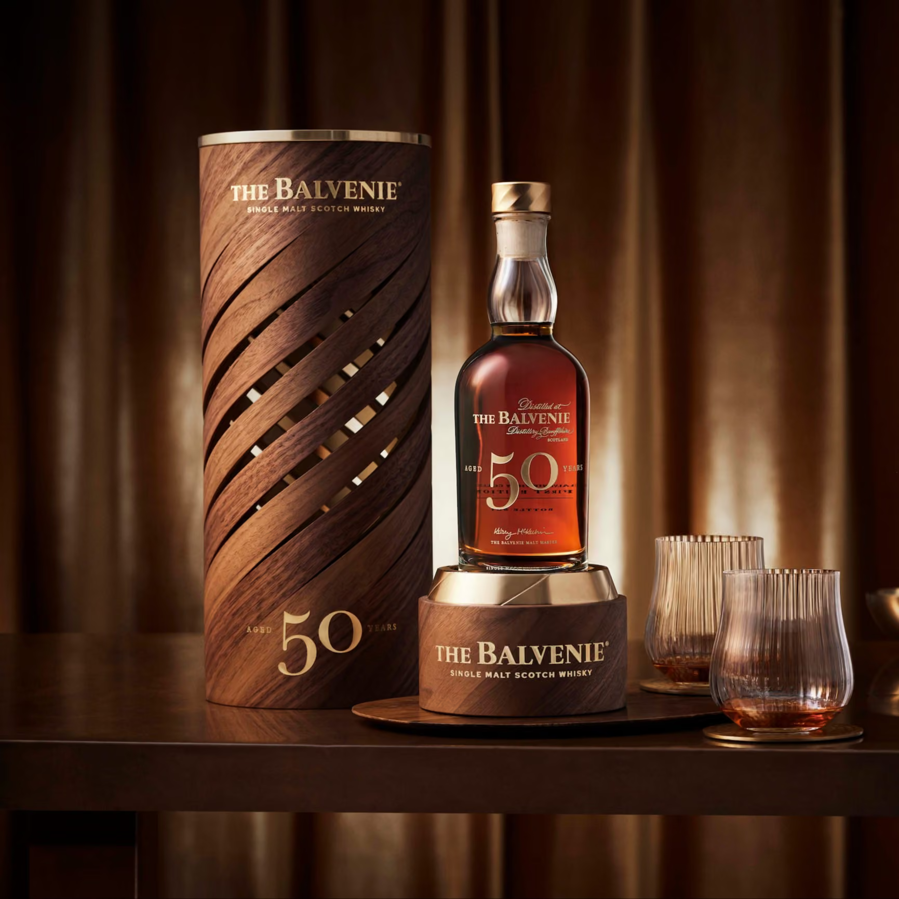
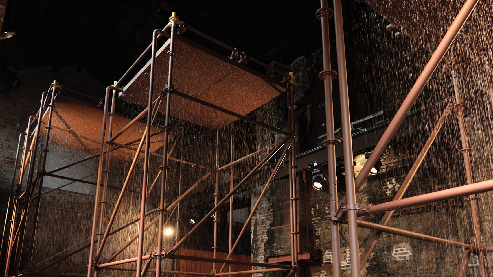
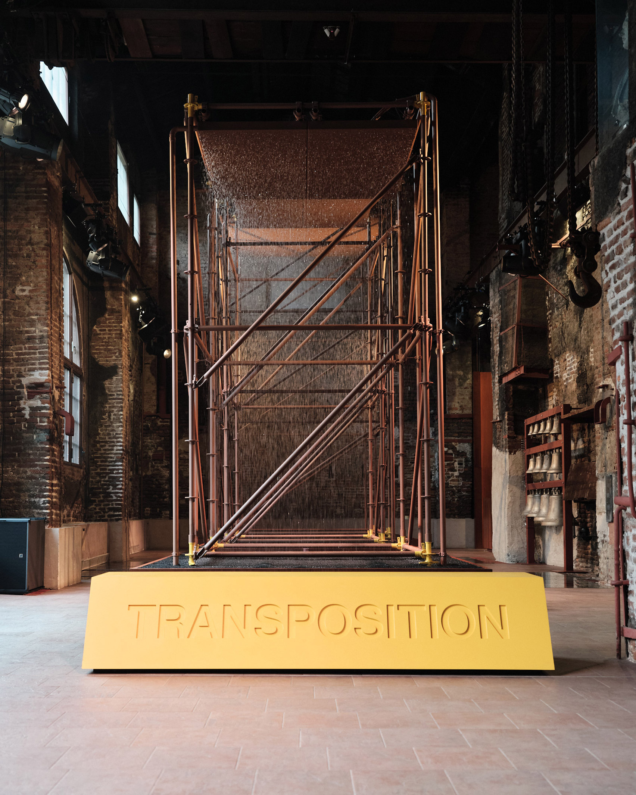
Интерес Росса — в масштабируемости метода. Его бруталистский, материалоцентричный язык одинаково убедителен в обуви и одежде, где главный носитель смысла — старение, тактильность, функция; в часах и носимой электронике, где абстракция превращается в инженерную деталь; в мебели и индустриальном дизайне — стулья, скамейки Caucus, унитазы для Kohler; в инсталляциях и временной архитектуре — для Balvenie на миланской Design Week он превратил вискокурение в сенсорный опыт с медными рамами, водными стенами и падением температуры. Общий знаменатель — ритуал и физический опыт.
Вывод
Коллаборации Сэмюэля Росса устроены как исследование, а не как маркетинг. Он приходит к бренду с теорией (материал, жизненный цикл, функция), проходит путь через производство бренда как ученик — «моя вся карьера, по сути, была кривой обучения» — и оставляет после себя не громкий логотип, а изменённую логику вещи. В эпоху, когда индустрия страдает от «сифонинга продуктов обратно потребителю», его рецепт звучит почти манифестом: «нужна эмоциональная связь. Мы должны помнить, зачем в этой индустрии, и что вносим в неё. Не должно быть просто перекачки продукта — нужен нарратив». И этот нарратив — о вещах, которые живут, стареют и работают вместе с человеком — оказался, пожалуй, самой устойчивой эстетикой последнего десятилетия.
Читайте также: